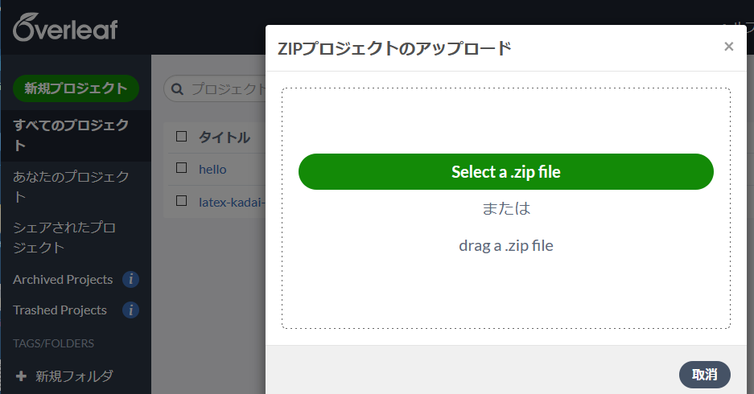

演習 4-2. 中課題2 の準備
- まず材料となるファイルをダウンロードする:
kadai-latex-overleaf.zip
(注意: Macを使っている場合は、 上のリンクを直接クリックしないこと! cf. Mac でうまくコンパイルできない場合) - Overleaf の最初の画面に戻り、 新規プロジェクト → プロジェクトのアップロード を選ぶ。
- ダウンロードした zip ファイルをアップロードする。

- 「kadai-latex-overleaf」プロジェクトができるので、
またもや画面左上のメニューから設定の
「コンパイラ」を LaTeX に変更。

- リコンパイル し、正しく文書が表示されることを確認する。